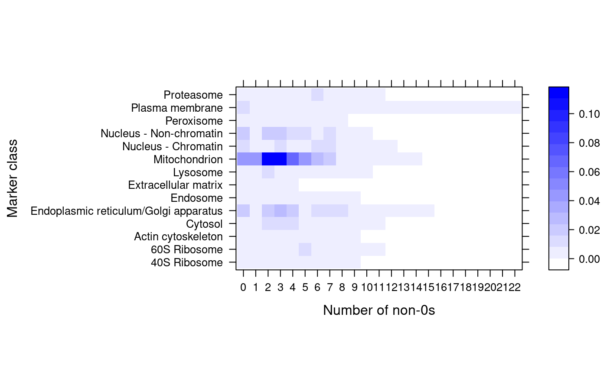

The function assumes that its input is a binary MSnSet and
computes, for each marker class, the number of non-zero expression
profiles. The function is meant to be used to produce heatmaps
(see the example) and visualise binary (such as GO) MSnSet
objects and assess their utility: all zero features/classes will
not be informative at all (and can be filtered out with
filterBinMSnSet) while features/classes with many
annotations (GO terms) are likely not be be informative either.
zerosInBinMSnSet(object, fcol = "markers", as.matrix = TRUE, percent = TRUE)
| object | An instance of class |
|---|---|
| fcol | A |
| as.matrix | If |
| percent | If |
A matrix or a list indicating the number of
non-zero value per marker class.
library(pRolocdata) data(hyperLOPIT2015goCC) zerosInBinMSnSet(hyperLOPIT2015goCC)#> 40S Ribosome 60S Ribosome Actin cytoskeleton Cytosol #> 0 0.005089059 0.005089059 0.001272265 0.005089059 #> 1 0.002544529 0.001272265 0.001272265 0.002544529 #> 2 0.005089059 0.005089059 0.001272265 0.011450382 #> 3 0.002544529 0.007633588 0.001272265 0.008905852 #> 4 0.007633588 0.006361323 0.001272265 0.010178117 #> 5 0.005089059 0.008905852 0.003816794 0.003816794 #> 6 0.001272265 0.002544529 0.001272265 0.002544529 #> Endoplasmic reticulum/Golgi apparatus Endosome Extracellular matrix #> 0 0.016539440 0.001272265 0.003816794 #> 1 0.005089059 0.001272265 0.005089059 #> 2 0.017811705 0.001272265 0.002544529 #> 3 0.024173028 0.003816794 0.002544529 #> 4 0.020356234 0.001272265 0.002544529 #> 5 0.005089059 0.002544529 0.000000000 #> 6 0.013994911 0.001272265 0.000000000 #> Lysosome Mitochondrion Nucleus - Chromatin Nucleus - Non-chromatin #> 0 0.001272265 0.043256997 0.013994911 0.016539440 #> 1 0.005089059 0.043256997 0.003816794 0.003816794 #> 2 0.012722646 0.110687023 0.002544529 0.021628499 #> 3 0.007633588 0.110687023 0.010178117 0.017811705 #> 4 0.002544529 0.068702290 0.006361323 0.015267176 #> 5 0.003816794 0.043256997 0.005089059 0.008905852 #> 6 0.003816794 0.025445293 0.008905852 0.006361323 #> Peroxisome Plasma membrane Proteasome #> 0 0.003816794 0.012722646 0.001272265 #> 1 0.002544529 0.001272265 0.001272265 #> 2 0.003816794 0.002544529 0.001272265 #> 3 0.001272265 0.003816794 0.002544529 #> 4 0.003816794 0.003816794 0.002544529 #> 5 0.002544529 0.001272265 0.006361323 #> 6 0.001272265 0.005089059 0.008905852 #> [ reached getOption("max.print") -- omitted 16 rows ]zerosInBinMSnSet(hyperLOPIT2015goCC, percent = FALSE)#> 40S Ribosome 60S Ribosome Actin cytoskeleton Cytosol #> 0 4 4 1 4 #> 1 2 1 1 2 #> 2 4 4 1 9 #> 3 2 6 1 7 #> 4 6 5 1 8 #> 5 4 7 3 3 #> 6 1 2 1 2 #> Endoplasmic reticulum/Golgi apparatus Endosome Extracellular matrix Lysosome #> 0 13 1 3 1 #> 1 4 1 4 4 #> 2 14 1 2 10 #> 3 19 3 2 6 #> 4 16 1 2 2 #> 5 4 2 0 3 #> 6 11 1 0 3 #> Mitochondrion Nucleus - Chromatin Nucleus - Non-chromatin Peroxisome #> 0 34 11 13 3 #> 1 34 3 3 2 #> 2 87 2 17 3 #> 3 87 8 14 1 #> 4 54 5 12 3 #> 5 34 4 7 2 #> 6 20 7 5 1 #> Plasma membrane Proteasome #> 0 10 1 #> 1 1 1 #> 2 2 1 #> 3 3 2 #> 4 3 2 #> 5 1 5 #> 6 4 7 #> [ reached getOption("max.print") -- omitted 16 rows ]pal <- colorRampPalette(c("white", "blue")) library(lattice) levelplot(zerosInBinMSnSet(hyperLOPIT2015goCC), xlab = "Number of non-0s", ylab = "Marker class", col.regions = pal(140))